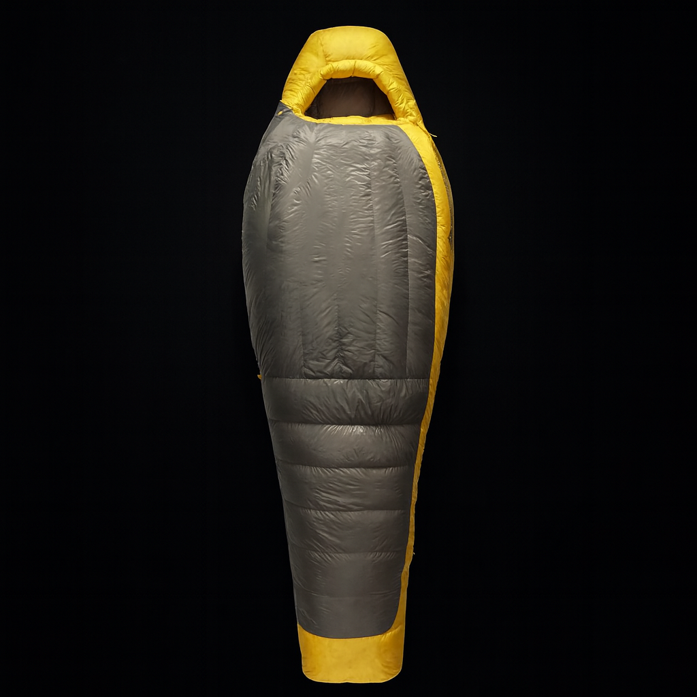
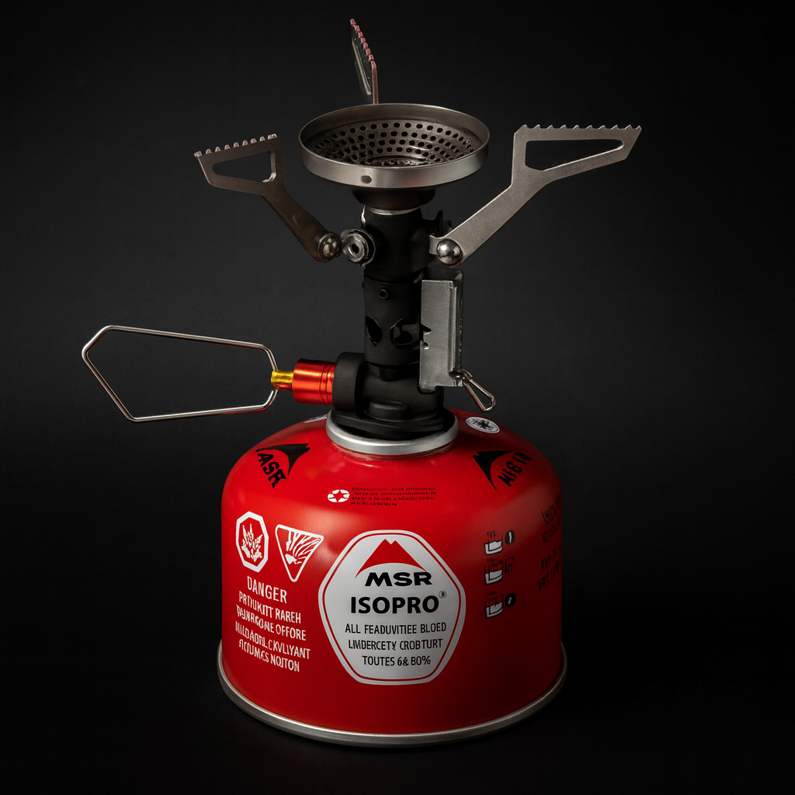

1-3
Make sleep possible
The tent keeps weather and bugs off you. The sleeping bag handles warmth. The pad handles the cold, hard ground. Skip any one of those and the trip gets fragile fast.
 By Chris Follin
By Chris FollinGUIDE
If I were helping somebody build a practical camp setup fast, this is the order I would spend money in. It is not the flashiest list. It is the one that makes the first overnight trip work: roof, warmth, ground insulation, water, and a simple way to make hot food or coffee.
This is not the coolest five items. It is the order that removes the most pain the fastest. I want the first money spent to solve shelter, sleep warmth, ground comfort, drinking water, and simple meals before decorative, tactical, or overly specialized stuff sneaks into the cart.
Think of this as the minimum viable overnight kit. Each purchase has to remove a failure point that can ruin the trip on its own.
1-3
The tent keeps weather and bugs off you. The sleeping bag handles warmth. The pad handles the cold, hard ground. Skip any one of those and the trip gets fragile fast.
4
A real water container turns drinking, cooking, rinsing, and cleanup into normal camp tasks instead of a constant refill problem.
5
A simple stove keeps meals and coffee from depending on fire rules, wet wood, campground grates, or a whole kitchen system you do not need yet.

Start with a shelter that pitches cleanly and does not turn arrival day into a puzzle.

Warmth is not optional. A real sleeping bag matters more than almost every camp accessory.

The pad is what separates you from cold ground and bad sleep. Fix that before buying camp toys.

Water storage is boring until it decides whether cooking, rinsing, cleanup, and the whole campsite work.

Hot water fast is one of the easiest ways to make camp feel calm and under control.
This is not a "best gear ever" list. It is the fastest route to removing the reasons people quit after one or two trips. Every item here earns its place by fixing a problem that can derail the whole weekend.
PROTECT SLEEP
Being cold, wet, or badly rested makes every other gear decision feel silly. The tent, sleeping bag, and pad are a system, not three unrelated products.
MAKE CAMP FUNCTION
A dependable stove and a real water container remove a surprising amount of stress. Once cooking and water stop being awkward, the whole trip feels more controlled.
KEEP IT SMALL
Five honest purchases are enough to start learning. After a few trips, the missing pieces become obvious instead of imaginary.
This is where a lot of people burn money early. There is a huge category of gear that feels exciting in the abstract but does very little to make your first few trips go better.
NOT YET
Useful later, but not the first thing keeping you from a good trip. Use a headlamp or existing flashlight at first, pack simple food, and add comfort once the core system works.
NOT YET
Axes, giant knives, and overly tactical stuff are usually not the bottleneck. Most new campers need a better sleep system before they need another blade.
NOT YET
You do not need to perfect your system before you have one. Use the first few trips to learn where the real pain points are, then upgrade with a reason.